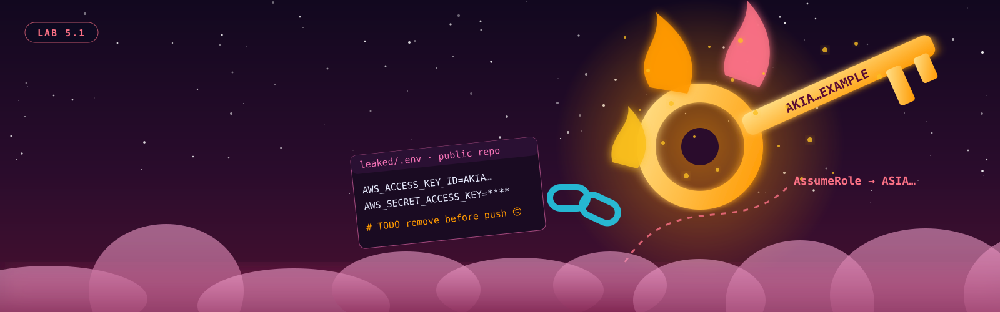
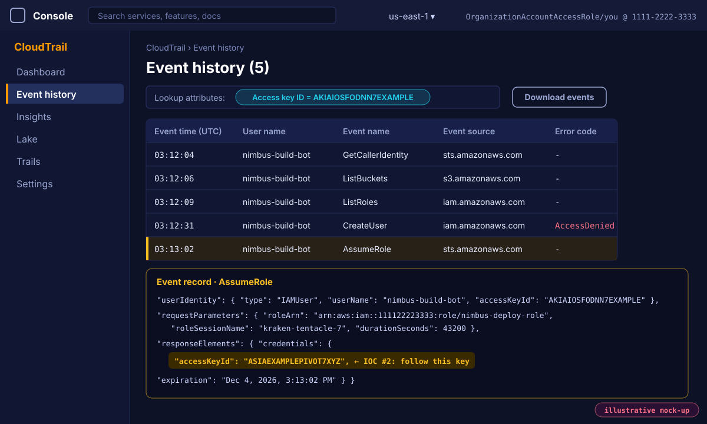
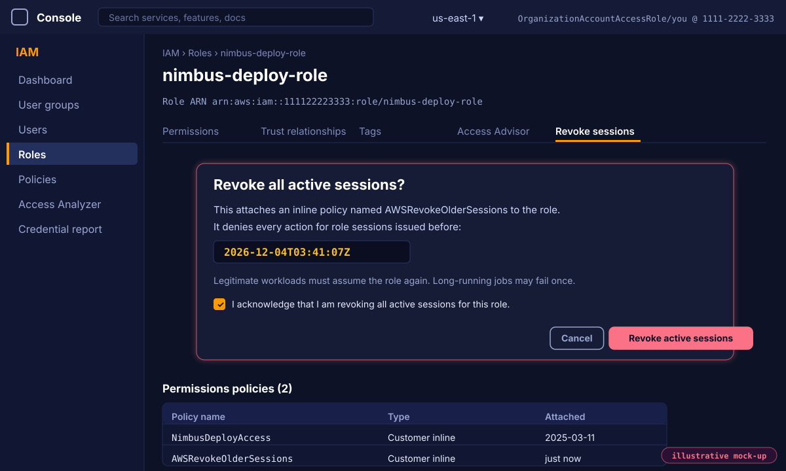

Burned Keys 🔥🔑
Goal: A build bot's access key was committed to a public repo. The Kraken has used it to do reconnaissance, steal payroll data, pivot into a deploy role with a 12-hour session, and plant persistence. You'll scope everything the key did, contain the key and its sessions, verify containment by replaying the stolen credentials, and recover what the attacker planted.
You'll need
- CloudShell with admin in a sandbox account (Lab 0)
jq(preinstalled in CloudShell)- Files: labs/day5/lab1-burned-keys/
Attack path
leaked AKIA → recon → s3:GetObject payroll → sts:AssumeRole (12h) → ASIA → ssm:PutParameter 🦑
Follow the 10 numbered steps. Each one ends in something you can check: a command output, a value in your notes, or a ⛔ from the attacker's retry script.
Goal: after setup.sh and attacker.sh, make every stolen credential useless and recover what was planted, without looking at the steps.
Constraints: don't delete the user or the role (you need them for the investigation), and save evidence before you change anything.
Done when: kraken-retry.sh shows ⛔ on the second call in both blocks, your timeline has both IOCs with UTC times, and you've captured the flag.
Steps
- Stage the crime scene
This creates the over-trusted user
nimbus-build-bot, a deploy role it can assume, a bucket of fake payroll data, and a.envfile containing the "leaked" key.cd ~/skyfortress/labs/day5/lab1-burned-keys ./setup.sh export LEAKED=$(grep AWS_ACCESS_KEY_ID ~/skyfortress-d5-lab1/leaked/.env | cut -d= -f2) echo "IOC #1: $LEAKED" - Unleash the Kraken
Wait about 15 seconds for IAM to propagate, then run the attacker simulation. It only uses the leaked credentials: the script clears your admin credentials inside its subshells. Read the output carefully. A good responder reads the attacker's moves.
./attacker.shThe Kraken tried
iam:CreateUserand gotAccessDenied. Will that failed call appear in CloudTrail?Reveal
Yes. Denied calls are logged with an
errorCode, and they're often your earliest sign that an attacker is probing permissions. Many detections key on bursts ofAccessDeniedfrom one principal. - Triage: whose key is this, and when was it last used?
aws sts get-access-key-info --access-key-id "$LEAKED" # → owning account aws iam list-access-keys --user-name nimbus-build-bot aws iam get-access-key-last-used --access-key-id "$LEAKED" # → service + Region + timeWrite down the start of your timeline: T0 = first use of the key. Open a case document now; your future self (and legal) will thank you.
- Scope: everything the AKIA did
CloudTrail event history covers the last 90 days of management events in the current Region. Events usually show up within about 5 minutes. If the list looks short, wait and run it again.
aws cloudtrail lookup-events \ --lookup-attributes AttributeKey=AccessKeyId,AttributeValue="$LEAKED" \ --max-results 50 --output json \ | jq -r '.Events[] | .CloudTrailEvent | fromjson | [.eventTime, .eventSource, .eventName, (.errorCode // "ok"), .sourceIPAddress] | @tsv' \ | sort | column -t2026-12-04T03:12:04Z sts.amazonaws.com GetCallerIdentity ok 203.0.113.66 2026-12-04T03:12:06Z s3.amazonaws.com ListBuckets ok 203.0.113.66 2026-12-04T03:12:09Z iam.amazonaws.com ListRoles ok 203.0.113.66 2026-12-04T03:12:31Z iam.amazonaws.com CreateUser AccessDenied 203.0.113.66 2026-12-04T03:13:02Z sts.amazonaws.com AssumeRole ok 203.0.113.66
Expected shape. Your times will differ, and the source IP will be your CloudShell's, because the lab's "attacker" runs there.
GetObjecton the payroll file is missing: S3 object reads are data events and never appear in event history. - Follow the pivot: AKIA → AssumeRole → ASIA
Find the
AssumeRoleevent and pull the new temporary access key ID fromresponseElements. That's IOC #2, and it's the key that actually did the damage.aws cloudtrail lookup-events \ --lookup-attributes AttributeKey=AccessKeyId,AttributeValue="$LEAKED" --output json \ | jq -r '.Events[].CloudTrailEvent | fromjson | select(.eventName=="AssumeRole") | {role: .requestParameters.roleArn, session: .requestParameters.roleSessionName, duration: .requestParameters.durationSeconds, newKey: .responseElements.credentials.accessKeyId}' export PIVOT=ASIA... # paste newKey here
SCREEN 5.1 Illustrative mock-up; the live console layout may differ. The AssumeRole session lasts 12 hours. If you deactivate the AKIA right now, how long can the ASIA keep working?
Reveal
Until it expires, up to 12 hours from
03:13:02. Temporary credentials are validated on their own; they don't check whether the key that created them is still active. Step 8 proves it.Hint: I don't see responseElements
Make sure you're filtering the AKIA's events, not the role's. The
AssumeRolecall is made by the AKIA, so it appears under the AKIA. Its response contains the new ASIA key. If you hit the event before CloudTrail finished processing it, wait a minute and try again. - Scope the pivot: what did the role session do?
aws cloudtrail lookup-events \ --lookup-attributes AttributeKey=AccessKeyId,AttributeValue="$PIVOT" --output json \ | jq -r '.Events[].CloudTrailEvent | fromjson | [.eventTime, .eventName, (.requestParameters | tostring | .[0:90])] | @tsv' | sortYou should find
DescribeInstances(reconnaissance),PutParameterandAddTagsToResource. The attacker used the parameter store to persist a config, and tagged itowner=platform-teamso it would look legitimate. - Recover the attacker's planted config
Save the parameter as evidence before you change anything, then decode it.
mkdir -p ~/case-IR-2026-1204-007 aws ssm get-parameter --name /nimbus/ops/sync-token --output json \ | tee ~/case-IR-2026-1204-007/ssm-sync-token.json \ | jq -r .Parameter.Value | base64 -d | jq .{ "c2": "beacon.kraken-collective.invalid", "op": "tentacle-7", "token": SKY{ •••••• redacted: this is your flag •••••• } }
The C2 domain is IOC #3. Add it to your DNS Firewall block list (Day 3) and your hunting queries.
- Contain, part 1: deactivate the key. Then predict.
aws iam update-access-key --user-name nimbus-build-bot --access-key-id "$LEAKED" --status Inactive sleep 10 && ./kraken-retry.shThe key is now Inactive. Will the stolen role session still be able to read the SSM parameter? Commit to an answer, then run
kraken-retry.sh.Reveal
It will. Deactivating a key does nothing to sessions it already created. This is the single most common containment mistake.
🐙 Long-term key (AKIA…) from the leaked .env: ⛔ DENIED → An error occurred (InvalidClientTokenId) ⛔ DENIED → An error occurred (InvalidAccessKeyId) 🐙 Stolen role session (ASIA…) from ~/.kraken/session.json: ✅ WORKS → arn:aws:sts::111122223333:assumed-role/nimbus-deploy-role/kraken-tentacle-7 ✅ WORKS → /nimbus/ops/sync-token (note: sts:GetCallerIdentity can never be denied by policy — watch the SECOND call in each block)
The key is dead and the session isn't. That gap is why step 9 exists.
- Contain, part 2: revoke every session issued before now
Attach the
AWSRevokeOlderSessionsdeny to the role (kills the pivot) and to the user (kills anyGetSessionTokencredentials). You can also use the console: IAM → Roles → nimbus-deploy-role → Revoke sessions.NOW=$(date -u +%Y-%m-%dT%H:%M:%SZ) jq --arg t "$NOW" '.Statement[0].Condition.DateLessThan["aws:TokenIssueTime"]=$t' \ revoke-older-sessions.json > /tmp/revoke.json aws iam put-role-policy --role-name nimbus-deploy-role --policy-name AWSRevokeOlderSessions --policy-document file:///tmp/revoke.json aws iam put-user-policy --user-name nimbus-build-bot --policy-name AWSRevokeOlderSessions --policy-document file:///tmp/revoke.json sleep 15 && ./kraken-retry.sh🐙 Long-term key (AKIA…) from the leaked .env: ⛔ DENIED → An error occurred (InvalidClientTokenId) ⛔ DENIED → An error occurred (InvalidAccessKeyId) 🐙 Stolen role session (ASIA…) from ~/.kraken/session.json: ✅ WORKS → arn:aws:sts::111122223333:assumed-role/nimbus-deploy-role/kraken-tentacle-7 ⛔ DENIED → An error occurred (AccessDeniedException)

SCREEN 5.2 Illustrative mock-up; the live console layout may differ. Now every call except
sts:GetCallerIdentityshould return ⛔AccessDenied. That one call can't be denied by any policy, so attackers often use it to check whether stolen credentials are "valid". A successfulGetCallerIdentitydoesn't mean containment failed. - Eradicate and document
With the evidence saved, remove the persistence and record what was exposed:
aws ssm delete-parameter --name /nimbus/ops/sync-token # Data exposure: which objects did the key read? (S3 object reads are DATA events — # only visible if your trail logs S3 data events. Day 2 says: it should.) aws s3api list-objects-v2 --bucket "$(cat ~/skyfortress-d5-lab1/bucket.txt)" --query 'Contents[].Key'Fill in the case timeline (time, actor, action, evidence source). Use this as a template:
UTC Actor Action Source T0 AKIA… (nimbus-build-bot) GetCallerIdentity, ListBuckets, ListRoles CloudTrail T0+1m AKIA… CreateUser → AccessDenied CloudTrail T0+1m AKIA… GetObject finance/payroll-2026-q4.csv S3 data events (if enabled) T0+2m AKIA… → ASIA… (kraken-tentacle-7) AssumeRole nimbus-deploy-role, 43200s CloudTrail T0+2m ASIA… PutParameter /nimbus/ops/sync-token CloudTrail T1 you Key Inactive; sessions revoked CloudTrail
kraken-retry.sh shows ⛔ for every call except GetCallerIdentity, the SSM parameter is gone, and your timeline has both IOCs (the AKIA and the ASIA) with timestamps.
Troubleshooting
| Symptom | Likely cause | Fix |
|---|---|---|
attacker.sh fails with InvalidClientTokenId | The new key hasn't propagated yet | Wait 15–30 seconds and run it again |
lookup-events returns nothing or very little | CloudTrail delivery lag (usually under 5 minutes), or you're in a different Region | Check echo $AWS_REGION is us-east-1, wait, retry |
No responseElements on the AssumeRole event | You searched by the ASIA, or the event isn't fully processed | Search by the AKIA. The AssumeRole call is made by it |
| Session still works after the revoke policy | IAM propagation, or the policy went on the user only | Wait 15 seconds. Confirm with aws iam list-role-policies --role-name nimbus-deploy-role |
jq: error … Cannot index on the decode | The parameter was already deleted (step 10 before step 7) | Restore from your saved ssm-sync-token.json evidence file |
Solution: the whole containment in one go
LEAKED=$(grep AWS_ACCESS_KEY_ID ~/skyfortress-d5-lab1/leaked/.env | cut -d= -f2)
NOW=$(date -u +%Y-%m-%dT%H:%M:%SZ)
jq --arg t "$NOW" '.Statement[0].Condition.DateLessThan["aws:TokenIssueTime"]=$t' revoke-older-sessions.json > /tmp/r.json
aws iam update-access-key --user-name nimbus-build-bot --access-key-id "$LEAKED" --status Inactive
aws iam put-user-policy --user-name nimbus-build-bot --policy-name AWSRevokeOlderSessions --policy-document file:///tmp/r.json
aws iam put-role-policy --role-name nimbus-deploy-role --policy-name AWSRevokeOlderSessions --policy-document file:///tmp/r.json
aws ssm get-parameter --name /nimbus/ops/sync-token --query Parameter.Value --output text | base64 -d | jq -r .tokenOrder matters in real life. Do the three containment calls back to back (or from a script) so the attacker doesn't get a window between "key dead" and "sessions dead" in which to create new persistence.
Automate the first 60 seconds. When AWS detects one of your keys exposed publicly, it sends an AWS Health event (type code AWS_RISK_CREDENTIALS_EXPOSED) and may attach an AWSCompromisedKeyQuarantine managed policy to the user. Write an EventBridge rule for that event that starts a Lambda or SSM Automation to deactivate the key, revoke sessions and open a case. Health events for global services like IAM arrive in us-east-1, so put the rule there:
{
"source": ["aws.health"],
"detail-type": ["AWS Health Event"],
"detail": {
"service": ["RISK"],
"eventTypeCode": ["AWS_RISK_CREDENTIALS_EXPOSED"]
}
}The exposed key ID arrives in resources[]. AWS publishes a full reference implementation in aws-samples/notify-and-remediate-exposed-access-key. Then ask yourself: should the automation also revoke sessions on every role the user can assume? (Hint: iam simulate-principal-policy or Access Analyzer can tell you which roles those are.)
./cleanup.sh # deletes user, role, parameter, bucket and local files Threat Hunter
Threat Hunter Vault Keeper
Vault Keeper Kraken Tamer
Kraken Tamer Skyfortress Legend
Skyfortress Legend